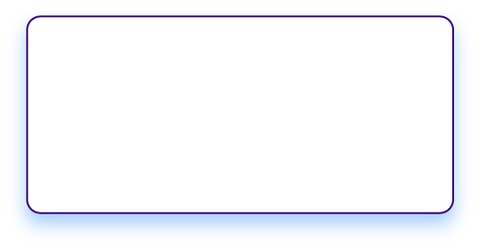
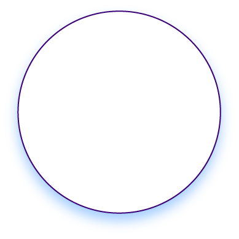
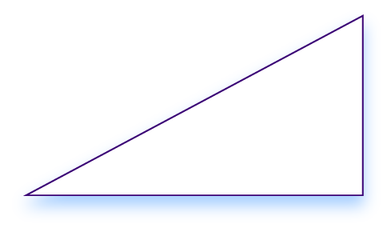

Progreso
Progreso
 Créditos
Créditos
 Bibliografía
Bibliografía
Introducción a las áreas de figuras planas
¿Qué es un área?
El área es una medida que cuantifica el tamaño de la superficie de una figura o un objeto en un plano bidimensional. Se expresa en unidades cuadradas, como metros cuadrados, centímetros cuadrados, pulgadas cuadradas, entre otros. El cálculo del área varía según la forma de la figura, y cada tipo de figura tiene su propia fórmula para calcularla.
Área del triángulo
El área de un triángulo se puede calcular utilizando la fórmula:
Esta fórmula nos dice que el área de un triángulo es igual a la mitad del producto de su base por su altura. La "base" puede ser cualquier lado del triángulo, y la "altura" es la longitud de la línea perpendicular desde la base hasta el vértice opuesto.
Ejemplo
Imagina un triángulo con una base de 6 metros y una altura de 4 metros. Aplicando la fórmula, el área del triángulo sería:
En este ejemplo, el área del triángulo es de 12 metros cuadrados. Esta fórmula es extremadamente útil y se aplica en muchas situaciones prácticas, desde el cálculo de la cantidad de pintura necesaria para cubrir una pared triangular hasta la determinación del área de un terreno en forma de triángulo.
Área de un paralelogramo
El área de un paralelogramo se calcula multiplicando la longitud de la base por la altura perpendicular a esa base. La fórmula para calcular el área de un paralelogramo es:
A diferencia del rectángulo, la altura de un paralelogramo no es necesariamente uno de sus lados, sino que es la distancia perpendicular entre la base y el lado opuesto.
Ejemplo
Supongamos que tienes un paralelogramo con una base de 10 metros y una altura de 5 metros (la altura es la distancia perpendicular desde la base hasta el lado opuesto). Utilizando la fórmula, el área del paralelogramo sería:
En este ejemplo, el área del paralelogramo es de 50 metros cuadrados. Esta fórmula es fundamental en geometría y tiene aplicaciones prácticas en áreas como la arquitectura, el diseño gráfico y la cartografía, donde es importante calcular el espacio cubierto por superficies inclinadas o irregulares.
Área de un rectángulo
El área de un rectángulo se calcula multiplicando su longitud (o base) por su anchura (o altura). La fórmula para calcular el área de un rectángulo es:
Esta fórmula es muy directa porque, en un rectángulo, todos los ángulos son rectos (90 grados), y los lados opuestos son iguales y paralelos.
Ejemplo
Supongamos que tienes un rectángulo cuya longitud es de 8 metros y cuya anchura es de 3 metros. Utilizando la fórmula, el área del rectángulo sería:
En este ejemplo, el área del rectángulo es de 24 metros cuadrados. Este cálculo es útil en numerosas situaciones prácticas, como determinar la cantidad de pintura necesaria para cubrir una pared, la cantidad de alfombra para un piso, o incluso la planificación de un espacio en un diseño arquitectónico. La fórmula del área del rectángulo es fundamental en la geometría y tiene aplicaciones en muchos campos diferentes.
Área del cuadrado
El área de un cuadrado se calcula utilizando la fórmula:
Esta fórmula indica que el área de un cuadrado es igual al cuadrado de la longitud de uno de sus lados. Dado que todos los lados de un cuadrado son iguales, solo necesitas conocer la longitud de uno de ellos para calcular el área.
Ejemplo
Imagina que tienes un cuadrado cuyo lado mide 5 metros.
En este ejemplo, el área del cuadrado es de 25 metros cuadrados. Esta fórmula es fundamental en la geometría y tiene aplicaciones prácticas en muchas áreas, como la arquitectura, el diseño gráfico, la agricultura y la planificación urbana. Calcular el área de un cuadrado es una tarea común en muchas situaciones prácticas, desde la planificación del diseño de un jardín hasta la disposición de los azulejos en un piso cuadrado.
Área del rombo
El área de un rombo se puede calcular utilizando la fórmula:
Donde d1 y d2 son las longitudes de las diagonales del rombo. Esta fórmula establece que el área de un rombo es igual a la mitad del producto de sus diagonales
Ejemplo
Supongamos que tienes un rombo cuyas diagonales miden 8 metros y 6 metros.
Utilizando la fórmula, el área del rombo sería:
En este ejemplo, el área del rombo es de 24 metros cuadrados. Este cálculo es útil en diversas aplicaciones prácticas, como en el diseño y la decoración, donde los rombos pueden ser una forma geométrica común. Además, entender cómo calcular el área de un rombo es importante en disciplinas como el arte, el diseño gráfico y la arquitectura.
Área del trapecio
El área de un trapecio se calcula utilizando la fórmula:
Donde b1 y b2 son las longitudes de las bases del trapecio (los dos lados paralelos) y h es la altura del trapecio, que es la distancia perpendicular entre las dos bases.
Ejemplo
Imagina que tienes un trapecio con una base inferior (b1) de 8 metros, una base superior (b2) de 5 metros, y una altura (h) de 4 metros.
Aplicando la fórmula, el área del trapecio sería:
En este ejemplo, el área del trapecio es de 26 metros cuadrados. Esta fórmula es muy útil en varias aplicaciones prácticas, como en la arquitectura y la ingeniería para calcular el espacio en diseños de techos y puentes, así como en la agricultura y la geografía para medir áreas de terrenos que no son perfectamente rectangulares.
Área del círculo
El área de un círculo se calcula utilizando la fórmula:
Donde π (pi) es una constante matemática aproximadamente igual a 3.14159, y r es el radio del círculo, es decir, la distancia desde el centro del círculo hasta cualquier punto de su borde.
Ejemplo
Imagina que tienes un círculo con un radio de 3 metros.
Aplicando la fórmula, el área del círculo sería:
En este ejemplo, el área del círculo es aproximadamente 28.274 metros cuadrados. Esta fórmula es crucial en muchas áreas de la ciencia y la ingeniería, especialmente en aquellas que involucran geometría y cálculos espaciales, como la arquitectura, la planificación urbana, y la física. Además, tiene aplicaciones prácticas en la vida cotidiana, como calcular el área de objetos circulares, desde platos hasta jardines y campos deportivos.
Veamos algunos ejemplos
- Visualización 1
-
Haz clic en cada sección.
Ejemplo 1

Calcula el área de un rectángulo cuya longitud es de 10 metros y cuya anchura es de 6 metros.
Solución
La fórmula para el área de un rectángulo es longitud * anchura (largo por ancho). Por lo tanto:
\(Área= 10 m * 6 m\)
\(Área= 60 m^2\)Ejemplo 2

Encuentra el área de un círculo cuyo radio es de 4 metros.
Solución
La fórmula para el área de un círculo es \(\pi r^2\). Por lo tanto:
\(Área= \pi (4 m)^2\)
\(Área= 3.14159 * 16 m^2\)
\(Área≈ 50.265 m^2\)Ejemplo 3

Un triángulo tiene una base de 8 metros y una altura de 5 metros. ¿Cuál es su área?
Solución
La fórmula para el área del triángulo es \(\frac{base * altura}{2}\). Por lo tanto:
\(Área=\frac{8m * 5m}{2}\)
\(Área=\frac{40m^2}{2}\)
\(Área= 20 m^2\)
- Visualización 2
-
Haz clic en los botones a, b y c para visualizar el contenido.
Ejemplo 1
Calcula el área de un rectángulo cuya longitud es de 10 metros y cuya anchura es de 6 metros.
Solución
La fórmula para el área de un rectángulo es longitud * anchura (largo por ancho). Por lo tanto:
\(Área= 10 m * 6 m\)
\(Área= 60 m^2\)Ejemplo 2
Encuentra el área de un círculo cuyo radio es de 4 metros.
Solución
La fórmula para el área de un círculo es \(\pi r^2\). Por lo tanto:
\(Área= \pi (4 m)^2\)
\(Área= 3.14159 * 16 m^2\)
\(Área≈ 50.265 m^2\)Ejemplo 3
Un triángulo tiene una base de 8 metros y una altura de 5 metros. ¿Cuál es su área?
Solución
La fórmula para el área del triángulo es \(\frac{base * altura}{2}\). Por lo tanto:
\(Área=\frac{8m * 5m}{2}\)
\(Área=\frac{40m^2}{2}\)
\(Área= 20 m^2\)
- Visualización 3
-
Ejemplo 1
Calcula el área de un rectángulo cuya longitud es de 10 metros y cuya anchura es de 6 metros.
Solución
La fórmula para el área de un rectángulo es longitud * anchura (largo por ancho). Por lo tanto:\(Área= 10 m * 6 m\)
\(Área= 60 m^2\)
Ejemplo 2
Encuentra el área de un círculo cuyo radio es de 4 metros.
Solución
La fórmula para el área de un círculo es \(\pi r^2\). Por lo tanto:\(Área= \pi (4 m)^2\)
\(Área= 3.14159 * 16 m^2\)
\(Área≈ 50.265 m^2\)
Ejemplo 3
Un triángulo tiene una base de 8 metros y una altura de 5 metros. ¿Cuál es su área?
Solución
La fórmula para el área del triángulo es \(\frac{base * altura}{2}\). Por lo tanto:\(Área=\frac{8m * 5m}{2}\)
\(Área=\frac{40m^2}{2}\)
\(Área= 20 m^2\)
Prueba tu conocimiento
Este cuestionario consta de 5 preguntas de selección múltiple con única respuesta. Haz clic sobre la respuesta que consideres correcta, verifica y avanza haciendo clic en las flechas.
1. Julia está colocando un tapete rectangular en su sala de estar. Si el tapete mide 4 metros de largo y 3 metros de ancho, ¿cuál es el área que cubre?
- 12m2
- 7m2
- 10m2
- 15m2
2. Un agricultor está planeando un nuevo círculo de cultivo con un radio de 10 metros. ¿Cuál es el área total que necesita para el círculo?
- 314m2
- 200m2
- 100m2
- 400m2
3. Para construir un techo en forma de triángulo, un arquitecto mide que la base es de 12 metros y la altura perpendicular es de 8 metros. ¿Cuál es el área del techo?
- 48m2
- 96m2
- 60m2
- 72m2
4. Un diseñador urbano está planificando una plaza pública cuadrada de 20 metros de lado. ¿Cuál es el área total de la plaza?
- 400m2
- 800m2
- 200m2
- 600m2
5. Un diseñador gráfico está creando un logotipo con forma de rombo. Si las diagonales del rombo miden 9 y 6 metros, ¿cuál es el área del rombo?
- 27m2
- 54m2
- 36m2
- 18m2